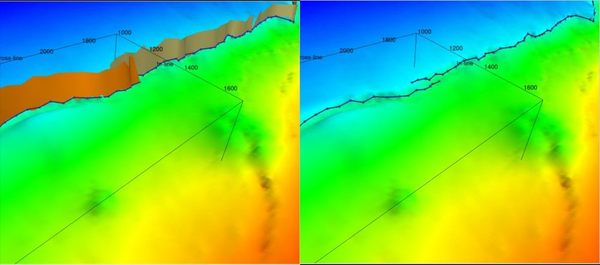

This plugin provides various tools to enhance the open source seismic interpretation platform OpendTect Version 6.4.0 or later.
Convex Hull Polygon
Description
Generate a convex hull polygon covering either the extent of 2D/3D seismic coverage or 2D/3D horizon interpretation. The user has full control over the 2D and 3D data included. The polygon can be used as is or after editing as a clipping polygon in the Grid 2D-3D Horizon plugin. To edit the polygon in the 3D scene a 3D horizon of suitable extent must be displayed eg such as a DataExtentHorizon.
The tool is accessed from the Tools submenu of the Polygon tree context menu.
Input
The tool dialog allows:
- Specifying a constant Z value for the output polygon
- Selecting 2D and 3D seismic data or horizon interpretation to use as the polygon scope
- Specifying the name and display settings of the generated polygon.
Constant Z Polyline
Description
This tool allows a series of points to be digitized in the 3D scene that can subsequently be used as additional surface control in the Grid 2D3D plugin.
The tool is accessed from the Tools submenu of the Polygon tree context menu.
Input
Fault Surface-3D Horizon Intersection Polyline
Description
This tool generates 3D poly-lines at the intersection of 3D horizons and fault surfaces. The intersection line is made by joining the intersections of the fault sticks with the horizon. A potential use of the tool is to grid a 3D horizon without any fault constraint, use the tool to gererate fault lines at the intersection of the 3D horizon and existing fault surfaces and then regrid the horizon using the new fault lines as a fault constraint. (Note the performance of this tool was substantially improved as of version 6.4.13)
The tool is accessed from the Tools submenu of the Polygon tree context menu.

Input
The UI specifies a poly-line name prefix to which the fault surface names will be appended.
Data Extent Horizon
Description
Generate a constant Z value 3D horizon which covers the extent of 2D and 3D seismic data in an OpendTect survey/project. The user has full control over the 2D and 3D data included. With the horizon displayed it is possible to draw fault polygons and grid clipping polygons that extend beyond the 3D survey definition. These can then be used in the Grid 2D-3D Horizon plugin to produce structure maps that extend across both 2D and 3D seismic interpretation in an OpendTect survey/project.
The tool is accessed either from the "Processing|Create Horizon Output" main menu item or from the New submenu of the 3D Horizon tree context menu.
Input
The tool dialog allows:
- Specifying a constant Z value for the output horizon
- Selecting 2D and 3D seismic data that the horizon should cover
- Specifying the name of the generated horizon